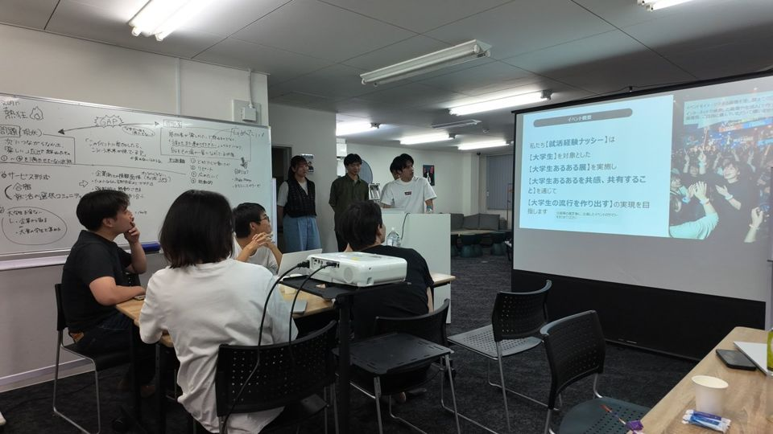
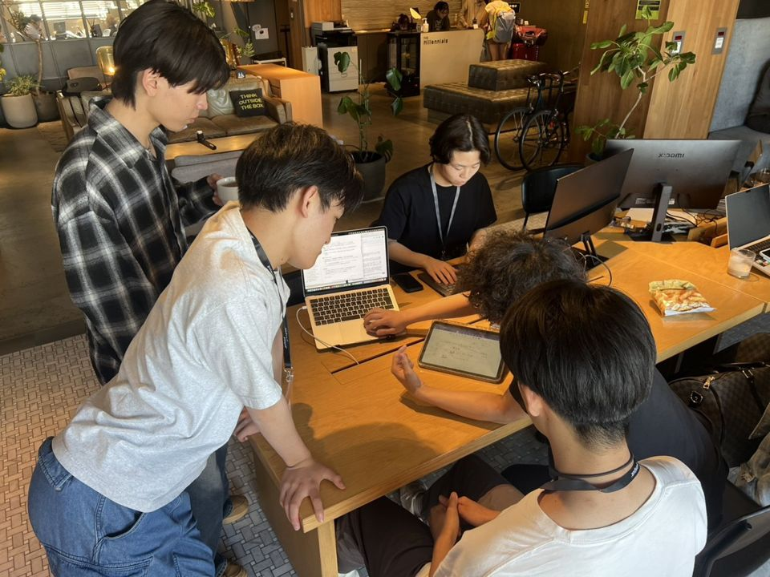
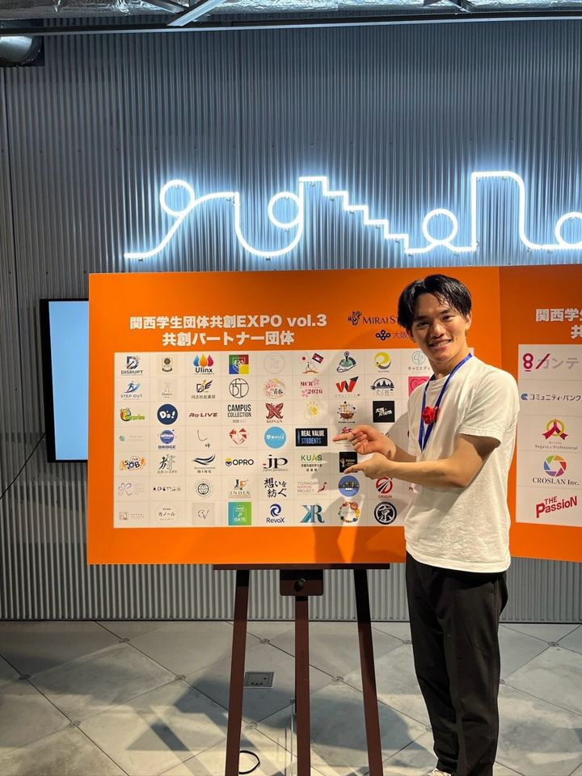
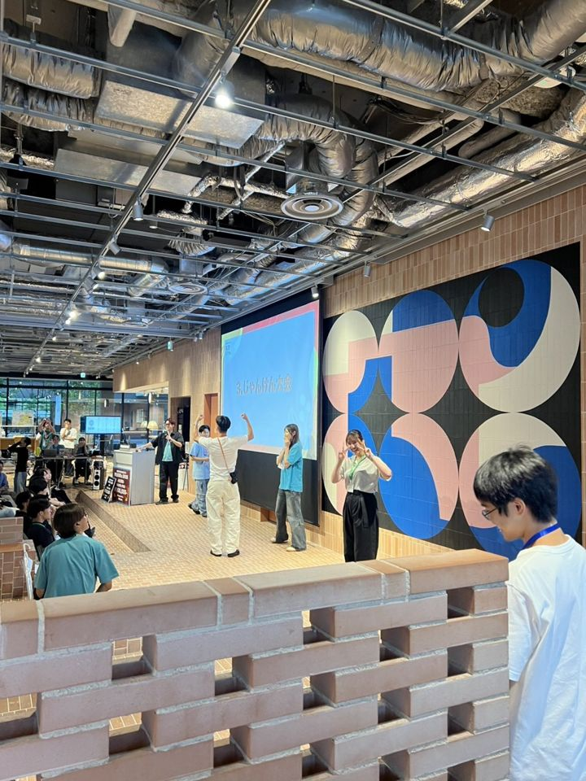
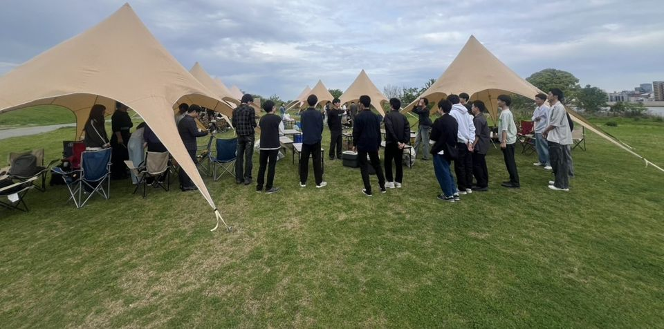
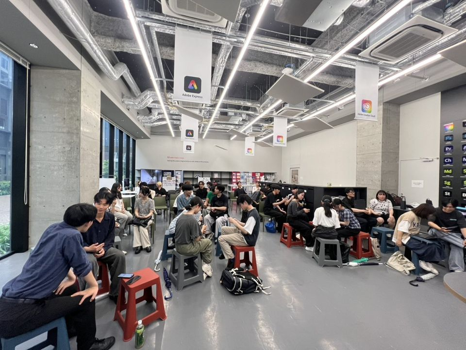
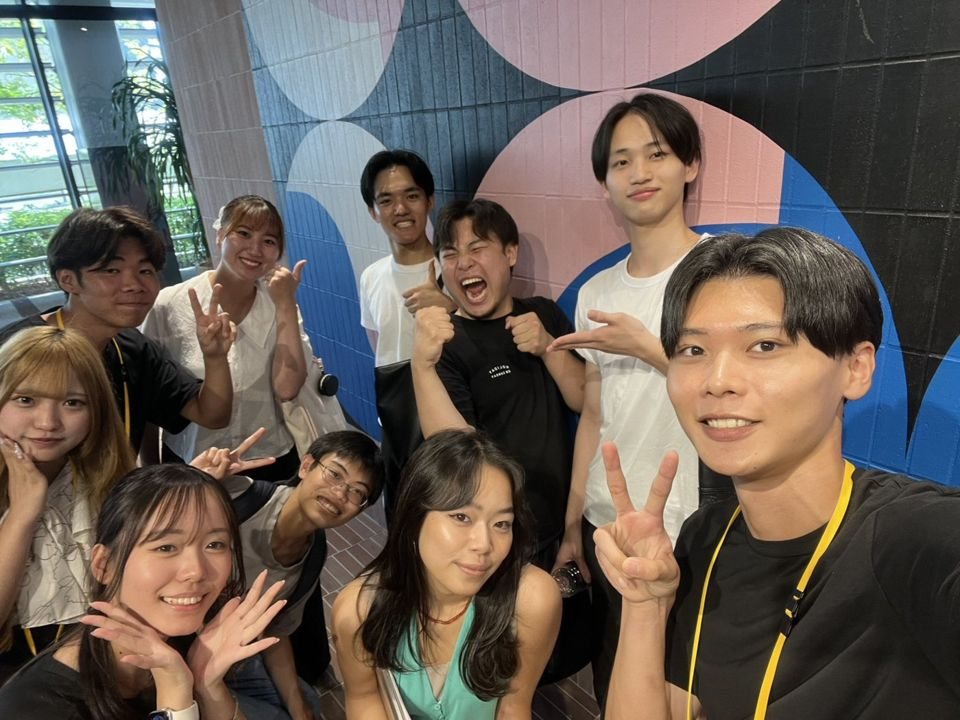
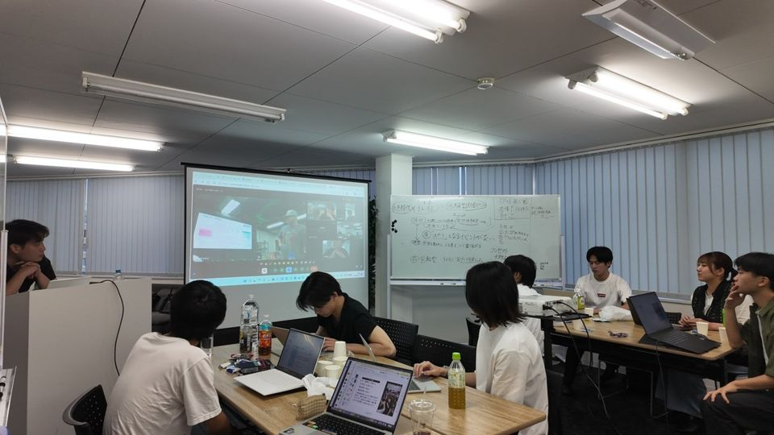
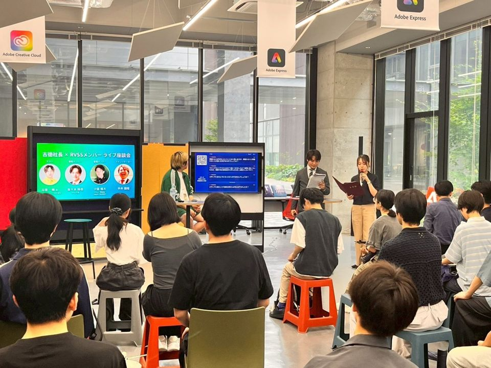
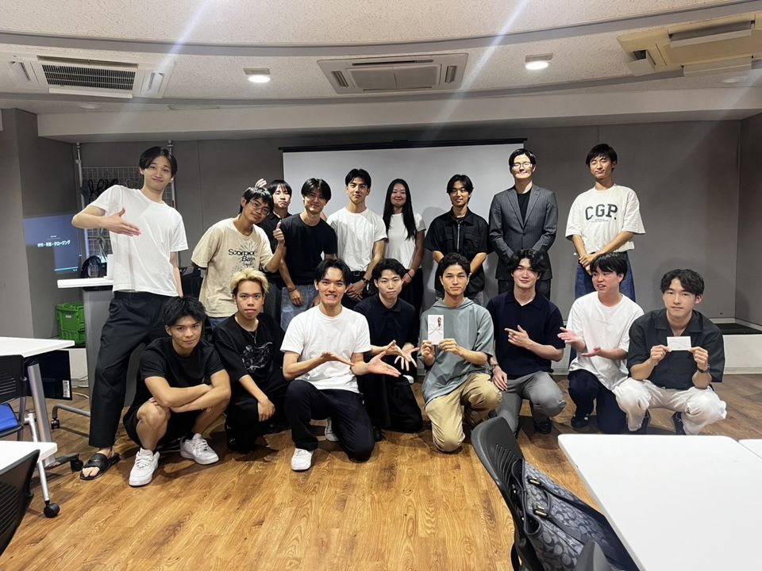

経営者の話を、直接聞ける
毎週土曜の朝の定例ミーティングには、全員が顔を出します。経営者の方が直接話してくださる時間もあります。



 視聴期限 --:--:--
視聴期限 --:--:--
▶ をもう一度押してください
ひとつでも当てはまるなら、RVSSへ

RVSSってどんな団体？
活動のメインテーマは「学びとつながり」。大学や学年を越えて集まったメンバーが、定例ミーティングやイベント、分科会で活動しています。



毎週土曜の朝の定例ミーティングには、全員が顔を出します。経営者の方が直接話してくださる時間もあります。

関東にも関西にも、中部や東北にも、本気で動く仲間がいます。遊ぶときは、全力で遊びます。
東京大学・京都大学・早稲田大学・慶應義塾大学・立命館大学・同志社大学などの学生が在籍しています。

AI・営業・就活など、テーマごとに分科会があります。

イベントの企画や広報、採用まで、運営はメンバーが担っています。
こんな人を待っています
入会を迷っている方へ
RVSS質問会では、活動の内容や雰囲気を、現役メンバーにZoomで質問できます。
入会を希望する方へ
これまで取り組んできたことや、RVSSでやってみたいことを伺います。
Zoomで約30分。日時は次の画面で選べます
カジュアル面談を申し込むよくある質問
はい。動画を見ていなくても、このページから申し込めます。
カジュアル面談は、入会を希望する方向けのZoomで約30分の場です。RVSS質問会は、入会を迷っている方向けの20分の場。
活動の内容や雰囲気を質問できて、申込は日時を選ぶだけです。
LINEで確認のメッセージが届き、ZoomのURLもそこでお送りします。前日と当日にもLINEでお知らせします。
届いたLINEに返信してください。
